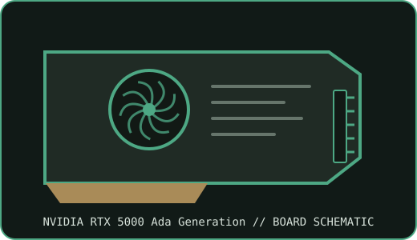

[ NVIDIA // PROFESSIONAL WORKSTATION GRAPHICS ]
NVIDIA RTX 5000 Ada Generation 32 GB
Ada Lovelace professional desktop graphics SKU built around AD102. The record identifies this model-level board; verify the exact board label, revision, VBIOS, and system qualification before installation.

MODEL IDENTIFICATION: NVIDIA RTX 5000 Ada Generation. This is a discrete professional workstation graphics board, not a GeForce, mobile GPU, compute-only accelerator, or a different memory-capacity variant.
Recorded SKU specifications
| Exact catalog SKU | NVIDIA RTX 5000 Ada Generation |
|---|---|
| Architecture / GPU chip | Ada Lovelace / AD102 |
| VRAM type / capacity / bus | 32 GB GDDR6 with ECC; 256-bit memory interface; 576 GB/s bandwidth |
| Board power / power connector | 250 W maximum board power; one 16-pin PCIe auxiliary power connector (12VHPWR/CEM5 class) |
| Host interface | PCI Express 4.0 x16 workstation slot |
| Display outputs | Four DisplayPort 1.4a outputs |
| Form factor / cooling | Full-height, full-length, dual-slot active-cooled board |
| Board boundary | One RTX 5000 Ada Generation accelerator only; memory capacity, power, connectors, and cooler details do not transfer to adjacent models in the family. |
| Archive identification | Record the board vendor and part number, revision, serial/date code, VBIOS, PCI device/subsystem IDs, driver version, power lead, and source-document revision. |
Supported drivers and host compatibility
Use NVIDIA RTX Enterprise production-branch or new-feature-branch drivers that list the exact GPU and target operating system. Select a matching Windows 10/11 64-bit or supported Linux x86_64 driver package only when its supported-product table includes this SKU; OS, kernel, and distribution support varies by release. Confirm driver support for the installed host, professional applications, and certification requirements before deployment.
Host this PCIe workstation card only in a system whose motherboard/BIOS, slot wiring, chassis clearance, bracket, thermal path, and PSU meet the model requirements. Check the OEM workstation qualification list and the board partner’s installation instructions; the PCIe slot alone is not evidence that a chassis can cool or power the card.
- Confirm the connector type and PSU pinout against the board-specific manual; never substitute EPS/CPU leads for PCIe GPU power leads.
- Maintain unobstructed airflow and verify the complete system power budget under sustained workload.
- Validate monitor cabling and display-mode limits for the card, driver, and connected displays.
Manufacturer and partner sources
- NVIDIA model-specific product documentation for NVIDIA RTX 5000 Ada Generation 32 GBManufacturer product specification or technical documentation for the identified SKU.
- PNY NVIDIA workstation GPU product page for NVIDIA RTX 5000 Ada Generation 32 GBNVIDIA board-partner product information; cross-check exact board part number and revision on the shipped item.
- NVIDIA professional graphics driver branches and supportOfficial NVIDIA documentation for RTX Enterprise Production Branch and New Feature Branch drivers.
Specifications are model-reference values; partner boards and OEM workstations can differ. Follow the source revision and the exact board/system manual where values conflict.